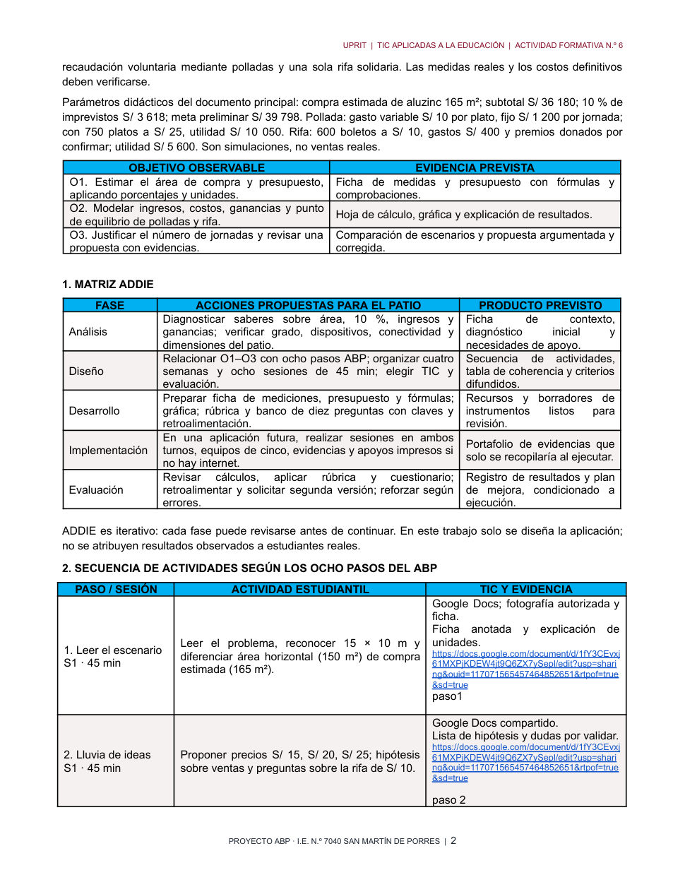
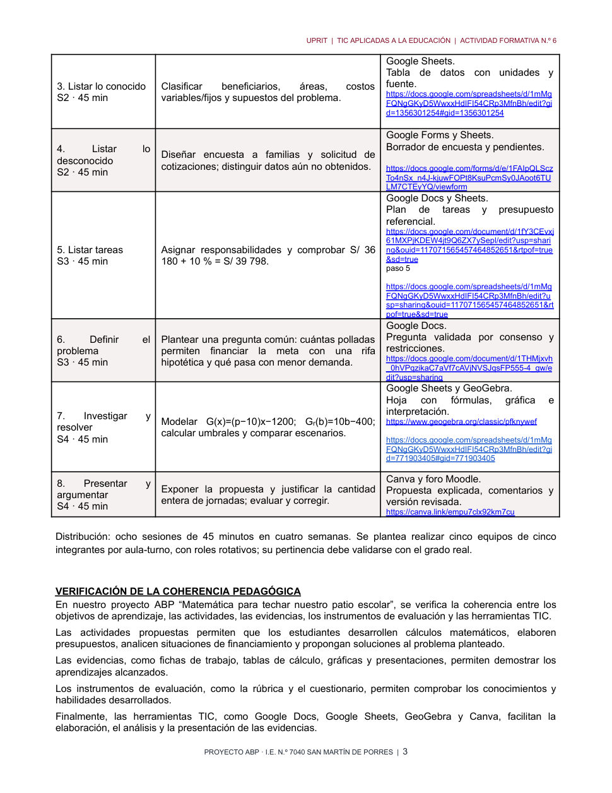
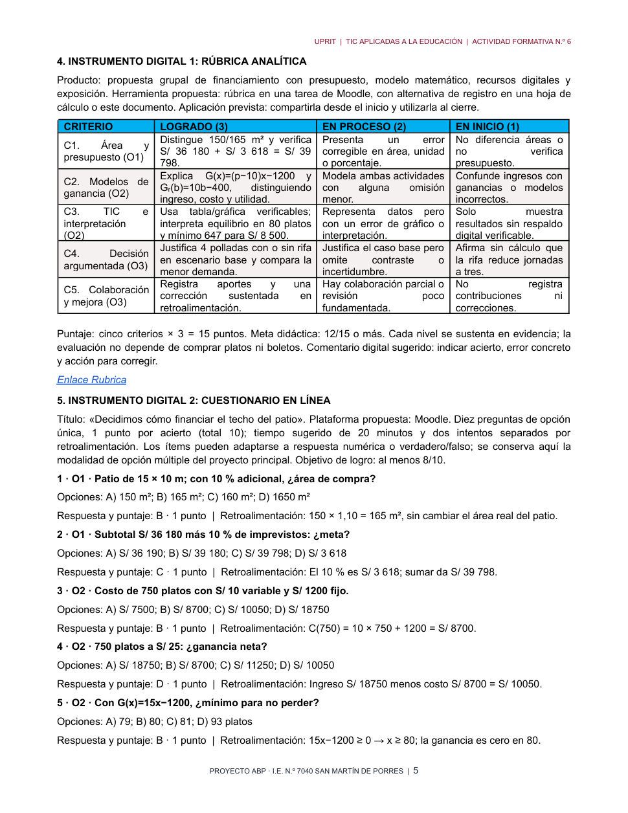
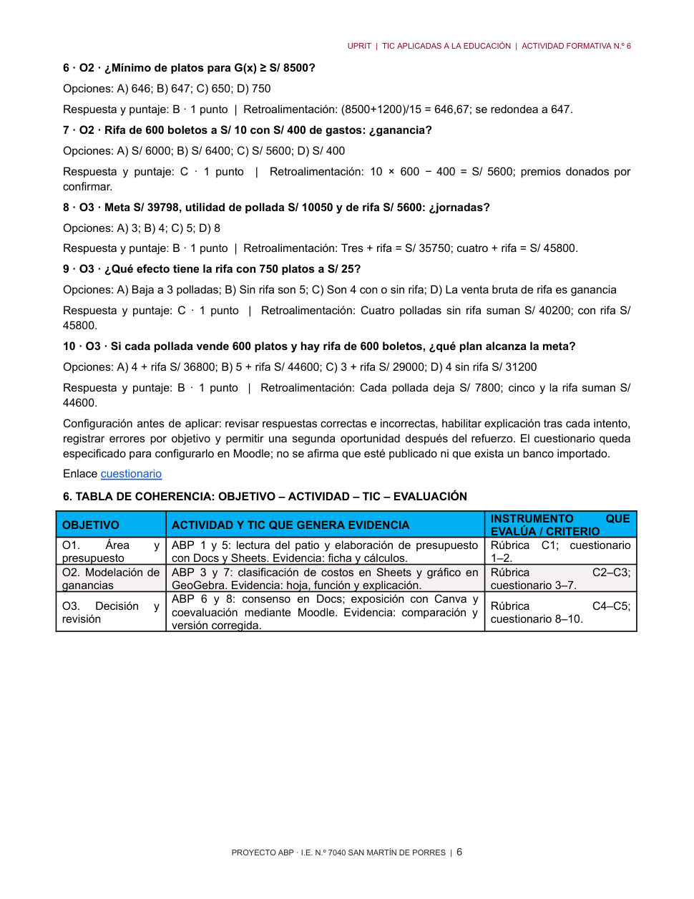

Resultados esperados
El avance 2 presenta una propuesta académica de diseño. Sus objetivos observables son O1: estimar área y presupuesto con unidades y porcentajes; O2: modelar ingresos, costos, ganancias y puntos de equilibrio; y O3: justificar el número de jornadas y revisar la propuesta mediante evidencias.
Diseño instruccional ADDIE
| Fase | Acciones planteadas | Producto esperado |
|---|---|---|
| Análisis | Diagnosticar saberes y condiciones de acceso; confirmar dimensiones. | Ficha de contexto y necesidades. |
| Diseño | Alinear O1–O3 con ABP, TIC y evaluación. | Secuencia, criterios y tabla de coherencia. |
| Desarrollo | Preparar fichas, presupuesto, gráficos e instrumentos. | Recursos y borradores de evaluación. |
| Implementación | Aplicación futura en ambos turnos, con apoyos impresos. | Portafolio de evidencias si se ejecuta. |
| Evaluación | Revisar cálculos, aplicar rúbrica y cuestionario, retroalimentar. | Resultados y plan de mejora condicionados a ejecución. |
Los ocho pasos del ABP y sus TIC
| Paso | Actividad | TIC / evidencia prevista |
|---|---|---|
| 1. Leer el escenario | Reconocer 150 m² y compra estimada de 165 m². | Docs; ficha anotada y foto autorizada. |
| 2. Lluvia de ideas | Plantear precios e hipótesis sobre ventas. | Docs; lista de ideas y dudas. |
| 3. Listar lo conocido | Clasificar beneficiarios y costos. | Sheets; tabla con unidades. |
| 4. Listar lo desconocido | Diseñar encuesta y solicitar cotizaciones. | Forms y Sheets; borradores. |
| 5. Listar tareas | Plan de roles y comprobación de S/ 39 798. | Docs y Sheets; plan y presupuesto. |
| 6. Definir el problema | Acordar pregunta con restricciones. | Docs; consenso y comentarios. |
| 7. Investigar y resolver | Modelar ganancias y comparar escenarios. | Sheets y GeoGebra; funciones y gráfica. |
| 8. Presentar y argumentar | Exponer resultados y someterlos a revisión. | Canva y Moodle; propuesta y coevaluación prevista. |
Distribución consignada: ocho sesiones de 45 minutos en cuatro semanas. El avance 2 justifica TPACK mediante la integración de conocimientos de contenido matemático (CK), pedagógico (PK) y tecnológico (TK), recurso por recurso.


Instrumentos y coherencia pedagógica
Se propone una rúbrica analítica de cinco criterios (15 puntos; objetivo didáctico de 12/15) y un cuestionario de diez preguntas (10 puntos; meta 8/10) para configuración futura en Moodle. La tabla de coherencia relaciona O1 con área y presupuesto, O2 con modelación y gráficas y O3 con decisiones y revisión.

